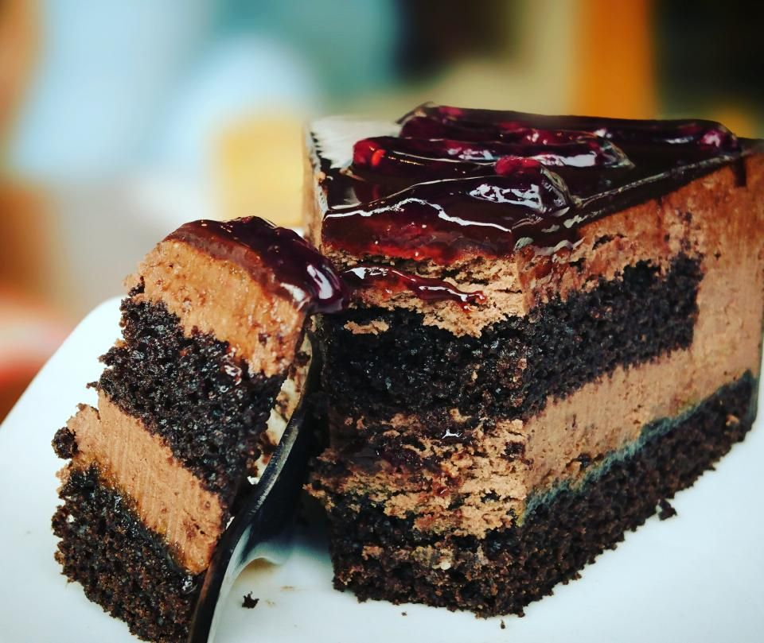

Özzadem Restoran · Silivri
Kaç kişilik bir sofra kuralım?
Silivri Cumhuriyet Mahallesi'nde, kebap ve Türk mutfağı çizgisinde bir aile restoranı. Kaç kişi olduğunuzu seçin: masa uzasın, sandalyeler gelsin, masa talebiniz WhatsApp mesajı olarak hazırlansın.
Talebi hazırlaMasanızı tarif edin, mesaj hazır olsun
Kişi sayısını yukarıdaki masadan seçtiniz. Birkaç ayrıntı ekleyin; WhatsApp mesajı siz seçtikçe yeniden yazılır. Gönder düğmesi WhatsApp'ı açar, mesajı siz gönderirsiniz.
Kalabalık bir sofra ya da kutlama mı planlıyorsunuz? Organizasyon planlayıcısında menü, pasta ve süsleme sorularınızı da aynı mesaja ekleyebilirsiniz.
WhatsApp'a gidecek mesaj
Bu bir masa talebidir; yeriniz restoranın yanıtıyla kesinleşir. Telefonla da arayabilirsiniz: 0553 693 52 86.
Uzun masada neler olur?
Aile ve kebap restoranlarında sofrayı çoğunlukla bu tabaklar kurar. Masadaki her servis takımı menünün bir bölümünü işaretler: dokunun, o bölüme gidin. Günün yemeklerini ve güncel çeşitleri restorana sormayı unutmayın.
Bu sofra hangi vesileyle?
Masaya konan isimlikler gibi: vesileyi seçin, ayrıntılı talep formu o vesileyle açılsın. Kişi sayısını, tarihi ve sorularınızı orada netleştirirsiniz.
Aile yemeği
Büyükler başköşede, çocuklar masanın ucunda; hafta sonu buluşmaları ve pazar yemekleri için uzun sofra.
Masa talebi oluşturDoğum günü
Pastanın restorandan mı ayarlanacağını, mum ve süslemeyi önceden sorun; sofra ona göre hazırlansın.
Doğum günü talebiToplu yemek
Ofis, ekip ya da dernek yemeği: kişi sayısı ve menü tercihi önceden konuşulunca servis rahat akar.
Toplu yemek talebiNişan ve söz yemeği
İki ailenin aynı masada buluştuğu gün; oturma düzenini ve menüyü baştan konuşmak işinizi kolaylaştırır.
Nişan yemeği talebiMezuniyet
Diploma töreninin ardından aile ve arkadaşlarla bir sofra. Tören günleri kalabalık olabileceğinden tarihi erkenden sorun.
Mezuniyet talebiMisafir ağırlama
Uzaktan gelen akrabayı ya da iş misafirini Silivri'de bir sofrada ağırlayın; yemeğin üstüne çay ve tatlı.
Masa talebi oluştur

Yemeğin üstüne bir tabak daha
Özzadem, Google kaydında restoranın yanında tatlıcı olarak da geçiyor. Kebabın ardından şerbetli bir tatlı mı, hafif bir sütlü mü, yoksa doğum günü için bir pasta mı? Tatlıcılarda en çok sorulanlar:
- Şerbetlilerkünefe, baklava, kadayıf
- Sütlülerfırın sütlaç, kazandibi
- Çikolatalılarsufle, pasta dilimi
- Mevsimliklerkabak ve ayva tatlısı
Kalabalık sofra için küçük notlar
Aileyle dışarıda yemek yerken işleri kolaylaştıran, her restoranda işe yarayan birkaç alışkanlık.
Kalabalıksanız önceden haber verin
Masaların birleştirilmesi zaman alabilir. Kişi sayısını ve saati önceden bildirmek, gelir gelmez oturmanızı kolaylaştırır.
Mezeleri ortaya söyleyin
Uzun masada herkesin önüne aynı tabak yerine ortaya birkaç çeşit koymak hem paylaşımı hem sohbeti açar.
Çocukları masanın bir ucuna
Çocukları bir uçta, geçiş yolundan uzak oturtmak hem onlar hem servis için daha rahat olur.
Alerji ve diyeti baştan söyleyin
Glüten, süt ürünü, kuruyemiş ya da acı hassasiyeti varsa sipariş verirken belirtin; içerik bilgisini sorun.
Pasta ve süslemeyi önceden konuşun
Dışarıdan pasta getirmek ya da masayı süslemek istiyorsanız bunu restorana önceden sorun.
Günün tenceresini sorun
Aile restoranlarında günlük pişen sulu yemekler değişir. Yola çıkmadan kısa bir mesajla öğrenebilirsiniz.
Saatler ve adres
Her gün 09:00–00:00.
| Pazartesi | 09:00–00:00 |
|---|---|
| Salı | 09:00–00:00 |
| Çarşamba | 09:00–00:00 |
| Perşembe | 09:00–00:00 |
| Cuma | 09:00–00:00 |
| Cumartesi | 09:00–00:00 |
| Pazar | 09:00–00:00 |
Saatler Google kaydına göredir; bayram ve özel günlerde değişebilir.
- Cumhuriyet, Meclis Sokak No:46
34570 Silivri/İstanbul - 0553 693 52 86
- WhatsApp'tan yazın
- @ozzademrestaurant
Sık sorulanlar
Rezervasyon gerekiyor mu?
Kalabalık gruplarda ve hafta sonlarında önceden haber vermeniz iyi olur. Bu sayfadaki masadan kişi sayısını seçip talebinizi WhatsApp'tan iletebilir ya da arayabilirsiniz; uygunluğu restoran teyit eder.
Paket servis ya da gel-al var mı?
Paket servis ve gel-al seçeneklerini telefonla ya da WhatsApp'tan sorabilirsiniz.
Günün yemeklerini nasıl öğrenirim?
WhatsApp'tan yazın; günün yemeklerini ve güncel fiyatları sorun. Menü sayfasındaki “Sor” düğmeleriyle merak ettiklerinizi tek mesajda toplayabilirsiniz.
Helal mi?
Restoran, Google kaydında “İslami Şartlara Uygun Gıda Restoranı” kategorisinde de geçiyor. Ayrıntılı bilgi için restorana doğrudan sorabilirsiniz.
Doğum günü ya da toplu yemek düzenleyebilir miyiz?
Bu tür talepler için Organizasyon sayfasındaki planlayıcıyı kullanın: kişi sayısı, tarih, menü ve pasta sorularınız tek mesajda toplanır. Uygunluğu ve seçenekleri restoran bildirir.
Kaçta açılıyor, kaçta kapanıyor?
Google kaydına göre her gün 09:00–00:00 arası açık. Bayram ve özel günlerde saatler değişebilir; emin olmak için arayın.